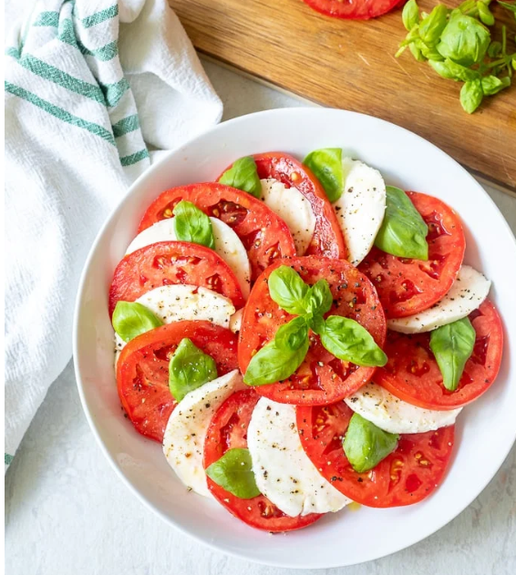

Tomato Mozzarella Salad

Description
Tomato and mozzarella salad served with fresh basil and drizzled with olive oil... there's nothing better!
A perfect salad alternative, especially in summer when you can get tomatoes and basil from the garden.
- Prep Time: 10 mins
- Total Time: 10 min
- servings: 6
Ingredients
- 3 large tomatoes,sliced
- 8 ounces mozzarella cheese, sliced
- ¼ cup olive oil
- ¼ cup balsamic vinegar
- ¼ teaspoon salt
- ⅛ teaspoon ground black pepper
- ¼ cup minced fresh basil
Steps
- Gather all ingredients.
- Place tomato slices, alternating with mozzarella slices, on a large serving platter.
- Combine oil, balsamic vinegar, salt, and pepper in a jar with a tight-fitting lid; shake well.
- Drizzle over tomatoes and mozzarella; sprinkle with basil.